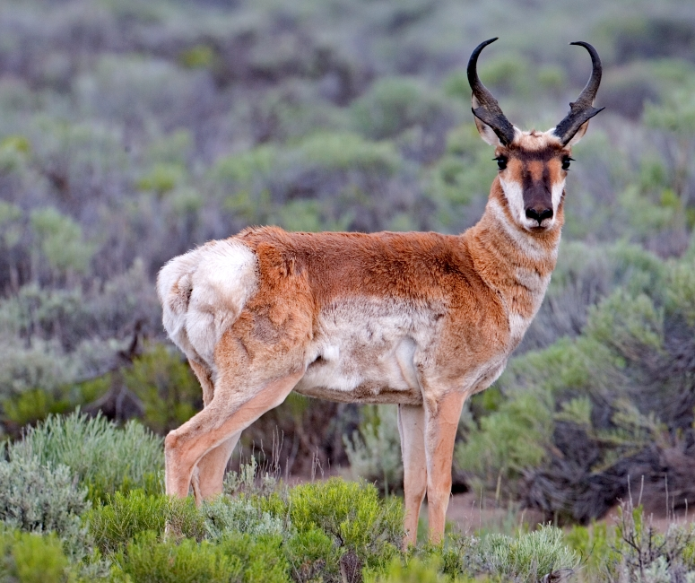

Wildlife Of North America
About
The fauna of North America is all the animals living in the Continental United States and its surrounding seas and islands, the Hawaiian Archipelago, Alaska in the Arctic, and several island-territories in the Pacific and in the Caribbean. The U.S. has many endemic species found nowhere else on Earth. With most of the North American continent, the U.S. lies in the Nearctic, Neotropic, and Oceanic faunistic realms, and shares a great deal of its flora and fauna with the rest of the American supercontinent.
1.Pronghorn
The pronghorn is a unique North American mammal. Its Latin name, Antilocapra americana, means "American goat-antelope," but it is not a member of the goat or the antelope family and it is not related to the antelopes found in Africa.
2.Striped skunk

The striped skunk is a skunk of the genus Mephitis that occurs across much of North America, including southern Canada, the United States, and northern Mexico. It is currently listed as least concern by the IUCN on account of its wide range and ability to adapt to human-modified environments.